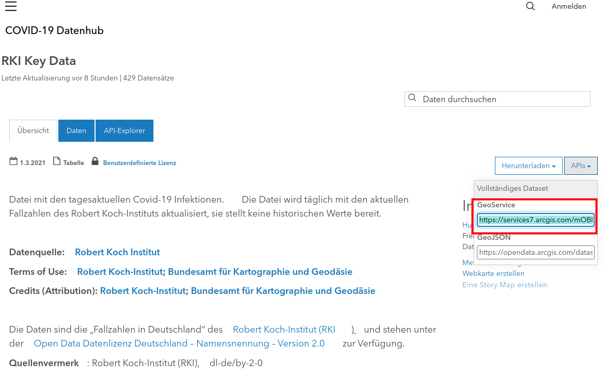
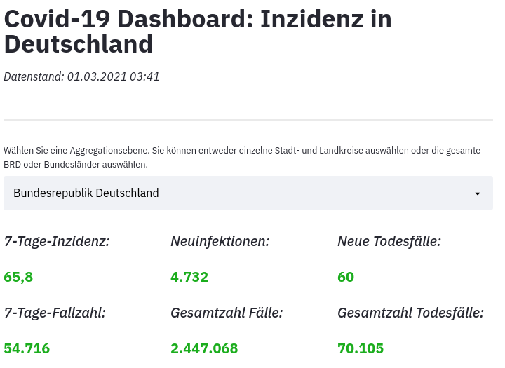
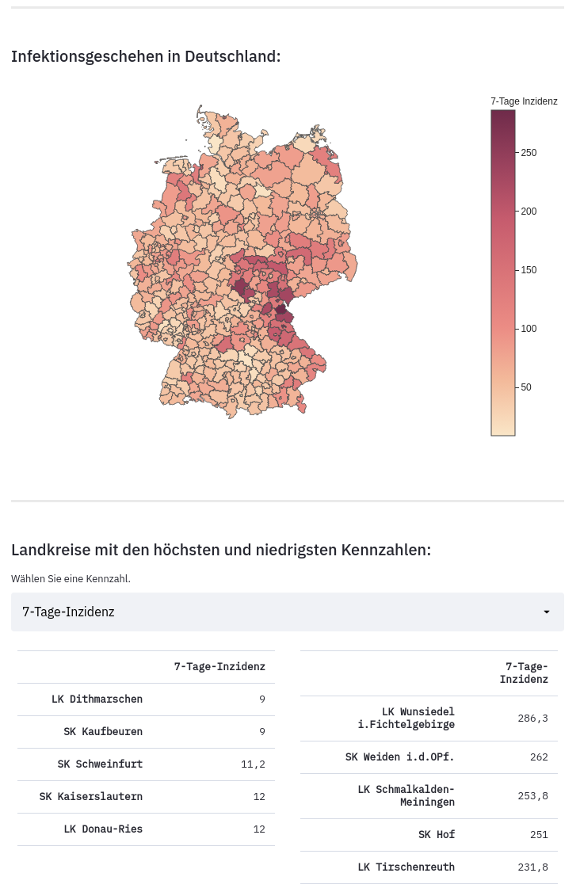

Building an interactive Covid-19 Dashboard with Streamlit, Plotly, and GitHub Actions
When people hear data science, they think of cutting-edge algorithms, computer vision using deep learning, hyperparameter optimization, or model training and evaluation. Another large part of a Data Scientist’s work, however, is data visualization, reporting, or descriptive data analysis. In fact, these tasks are often just as important, or even more important, because they can quickly and easily reveal important information, and thus aid in informed decision-making. A relatively simple way to make the results of one’s data analyses usable is by creating dashboards that show relevant metrics and KPIs, and by making the dashboard accessible to stakeholders.
In this blogpost, I describe how I built such a dashboard with information on Covid-19 for Germany. The dashboard is interactive and the data is automatically updated on a daily basis. It is built in Python using the Streamlit package and deployed on Streamlit sharing:

I created the dashboard in 5 main steps:
- Writing an ETL pipeline
- Creating the visualizations
- Creating the app
- Automatically update the data
- Deploy the dashboard
1. Writing an ETL pipeline
The first step in every data science, analysis, or visualization project is collecting the data. Fortunately, the Robert Koch Institute (RKI), which is officially and continuously monitoring the Covid-19 situation in Germany, provides an application programming interface (API) from which the official data regarding new cases, deaths, 7-day incidence, etc., can be retrieved. This API provides key data for the respective day and is updated daily. To extract the data, I use the requests library to make a get request to the link stated on the RKI webpage. I use the GeoJSON endpoint to also retrieve geospatial information, which is used for plotting later on.

The get-request returns a status code of 200 when it was successful together with the data in JSON format. The actual data is stored under the key “features”. To get it in a more accessible format, I use Pandas’ json_normalize() function. Combining this into a small function then looks as follows:
def get_data_from_api(url):
request = requests.get(url)
if request.status_code == 200:
# transform to pandas DataFrame
df = pd.json_normalize(request.json()["features"])
return df
else:
print("The data could not be updated.")
The data contains information on different aggregation levels, with the district level being the lowest level. Besides district-level data, the numbers are also aggregated to federal state level as well as for whole Germany. The data however only comes with an identifier; to get human-readable names of the districts and federal states, I therefore use another endpoint which provides a list that can be used to map the IDs to the official names. Using the just defined function, the data is then pulled from the API and the labels are merged to the Covid-19 data. The rest of the script is mostly renaming of the columns and deleting some unused columns from the data. In a last step, the extracted and cleaned dataset is then stored as a .csv file, and the data is additionally appended to another .csv file, which contains the history of the data:
# save data as .csv file
df.to_csv("covid_data.csv")
# append to history csv file
df["date"] = date.today().strftime("%m-%d-%Y")
if os.path.isfile("./history.csv"):
df.to_csv("history.csv", mode="a", header=False) # append to existing file
else:
df.to_csv("history.csv") # create new file
2. Creating an interactive Map using Plotly
One component of the dashboard is an interactive choropleth map that displays the 7-day incidence for each county in Germany. I use Plotly for this task. It has the advantage that selected data is displayed on the map when one hovers over the counties. I choose to display the county name, 7-day incidence, new cases, and new deaths. The map is created using Plotly Express and the px.choropleth function. It takes a Pandas DataFrame as input, a GeoJSON object containing the coordinates, and some additional arguments, which I do not discuss in detail here. The data is already in a pandas DataFrame or can be loaded into such a DataFrame from the .csv file, however, I still need to create the GeoJSON object from the API. To do so, I create a dictionary containing the county ID to match the data, and the coordinates (see also this blogpost on choropleth maps with plotly). Lastly, I do some styling and remove the base map. The whole function then looks like the following:
def create_map(df, api_url):
# get geometry information for plotting
response = requests.get(api_url)
kreis_geo = []
for kreis in response.json()["features"]:
AdmUnitId = kreis["properties"]["AdmUnitId"]
geometry = kreis["geometry"]
kreis_geo.append({
"type": "Feature",
"geometry": geometry,
"id": AdmUnitId
})
geo = {'type': 'FeatureCollection', 'features': kreis_geo}
# keep counties only, 0-16: whole Germany and federal states
df = df[df.AdmUnitId > 16]
# create map
fig = px.choropleth(df,
geojson=geo,
scope="europe",
color_continuous_scale="Burgyl",
locations="AdmUnitId",
color="inzidenz7Tage",
template="simple_white",
hover_name="verwaltungseinheit",
hover_data=("inzidenz7Tage", "infektionenNeu", "todeNeu"),
labels={"AdmUnitId": "Landkreis",
"verwarltungseinheit": "Landkreis",
"inzidenz7Tage": "7-Tage Inzidenz",
"todeNeu": "Todesfälle",
"infektionenNeu": "Neuinfektionen"}
)
fig.update_geos(fitbounds="locations", visible=False)
fig.update_layout(margin={"r": 0, "t": 0, "l": 0, "b": 0})
return fig
3. Creating the webapp using Streamlit
3.1 Layout and Functionality
To create the actual webapp and the layout I use the Streamlit package (see also this post). At the top of the dashboard I want to display some key facts and figures: 7-day incidence, new cases, new cases in the last 7 days, total number of cases, new deaths, total number of deaths. There should also be a selectbox in which the user can choose the preferred level of aggregation, i.e. if the data for the whole country is shown, on a federal state level, or for a selected county. To achieve this, st.selectbox() is used to get the user input, which is then used to filter and select the data accordingly. To get a nice and compact layout, I use streamlit’s built-in columns functionality:

The choropleth map is then displayed below the key facts, and below the map, I display the top and bottom 5 counties based on the selected metrics. The user can choose between the key facts shown at the top of the dashboard: 7-day incidence, new cases, new cases in the last 7 days, total number of cases, new deaths, total number of deaths.

3.2 App Performance and Caching
Creating the map object takes some time, hence repeating this step every time the dashboard is loaded is slow and impedes performance of the page and the user experience. Luckily, Streamlit also comes with built-in caching. To cache a function, one can use the @st.cache decorator before defining functions. When the function is then called, Streamlit checks the inputs, variables used inside the function, the function body, and the body of any other function used inside the function. If it is the first time the function is called with a particular set of those values, the function is executed and the results are stored in a local cache. If the function is called again without any changes, the execution is skipped and the cached output is returned instead.
I use this functionality for the functions that may take some time: loading the data from the .csv file, and creating the map object. Since the data is daily updated, it must be reloaded after an update. However, since the name of the .csv file, and hence the input to the data loading function, does not change, the cached data, i.e. the outdated data, is returned. To avoid this behavior, I define a function which evaluates the timestamp of the last data update. This timestamp is also used as input to the data loading function. Thus, when there is an updated version of the data (and therefore an updated timestamp), the function is executed again and loads the new data into the dashboard.
3.3 Putting it all together
Putting all the above described steps together, the complete script that creates the streamlit webapp looks as follows:
import pandas as pd
import requests
import streamlit as st
import plotly.graph_objs
import plotly.express as px
import os
from datetime import datetime
import locale
locale.setlocale(locale.LC_ALL, "de_DE")
# get timestamp of last data update
def get_timestamp(file):
ts = os.path.getmtime(file)
return ts
# load data into
@st.cache(suppress_st_warning=True)
def load_data(file, timestamp, **kwargs):
df = pd.read_csv(file, **kwargs)
return df
@st.cache(suppress_st_warning=True, hash_funcs={plotly.graph_objs.Figure: lambda _: None}, allow_output_mutation=True)
def create_map(df, api_url):
# get geometry information for plotting
response = requests.get(api_url)
kreis_geo = []
for kreis in response.json()["features"]:
AdmUnitId = kreis["properties"]["AdmUnitId"]
geometry = kreis["geometry"]
kreis_geo.append({
"type": "Feature",
"geometry": geometry,
"id": AdmUnitId
})
geo = {'type': 'FeatureCollection', 'features': kreis_geo}
# keep counties only; 0-16: whole Germany and federal states
df = df[df.AdmUnitId > 16]
# create map
fig = px.choropleth(df,
geojson=geo,
scope="europe",
color_continuous_scale="Burgyl",
locations="AdmUnitId",
color="inzidenz7Tage",
template="simple_white",
hover_name="verwaltungseinheit",
hover_data=("inzidenz7Tage", "infektionenNeu", "todeNeu"),
labels={"AdmUnitId": "Landkreis",
"verwarltungseinheit": "Landkreis",
"inzidenz7Tage": "7-Tage Inzidenz",
"todeNeu": "Todesfälle",
"infektionenNeu": "Neuinfektionen"}
)
fig.update_geos(fitbounds="locations", visible=False)
fig.update_layout(margin={"r": 0, "t": 0, "l": 0, "b": 0})
return fig
# load data and create map object
ts = get_timestamp("covid_data.csv")
updated = datetime.fromtimestamp(ts).strftime("%d.%m.%Y %H:%M")
df = load_data("covid_data.csv", timestamp=ts, index_col=0)
fig = create_map(df, "https://opendata.arcgis.com/datasets/917fc37a709542548cc3be077a786c17_0.geojson")
##### ACTUAL APP:
st.title("Covid-19 Dashboard: Inzidenz in Deutschland")
st.markdown("*Datenstand: " + updated + "*")
st.markdown("<hr style=\"height:3px;border:none;background-color:darkgrey\">", unsafe_allow_html=True)
# filter data using input
choices = list(df.verwaltungseinheit.unique())
input = st.selectbox("Wählen Sie eine Aggregationsebene. Sie können entweder einzelne Stadt- und Landkreise auswählen oder die gesamte BRD oder Bundesländer auswählen.", choices, index=choices.index('Bundesrepublik Deutschland'))
inzidenz = round(float(df.loc[df["verwaltungseinheit"]==input].inzidenz7Tage), 1)
fall7tage = int(df.loc[df["verwaltungseinheit"]==input].infektionen7Tage)
neuinfektionen = int(df.loc[df["verwaltungseinheit"]==input].infektionenNeu)
gesamtinfektionen = int(df.loc[df["verwaltungseinheit"]==input].infektionenGesamt)
todeNeu = int(df.loc[df["verwaltungseinheit"]==input].todeNeu)
todeGesamt = int(df.loc[df["verwaltungseinheit"]==input].todeGesamt)
### KEY FACTS FOR SELECTED AGGREGATION
col1, col2, col3 = st.beta_columns(3)
with col1:
st.markdown("### *7-Tage-Inzidenz:*")
st.markdown("### <font color=‘#8b0000’><strong>{:n}</strong></font>".format(inzidenz), unsafe_allow_html=True)
st.markdown("### *7-Tage-Fallzahl:*")
st.markdown("### <font color=‘#8b0000’><strong>{:n}</strong></font>".format(fall7tage), unsafe_allow_html=True)
st.write("\n")
with col2:
st.markdown("### *Neuinfektionen:*")
st.markdown("### <font color=‘#8b0000’><strong>{:n}</strong></font>".format(neuinfektionen), unsafe_allow_html=True)
st.markdown("### *Gesamtzahl Fälle:*")
st.markdown("### <font color=‘#8b0000’><strong>{:n}</strong></font>".format(gesamtinfektionen), unsafe_allow_html=True)
st.write("\n")
with col3:
st.markdown("### *Neue Todesfälle:*")
st.markdown("### <font color=‘#8b0000’><strong>{:n}</strong></font>".format(todeNeu), unsafe_allow_html=True)
st.markdown("### *Gesamtzahl Todesfälle:*")
st.markdown("### <font color=‘#8b0000’><strong>{:n}</strong></font>".format(todeGesamt), unsafe_allow_html=True)
st.write("\n")
st.markdown("<hr style=\"height:3px;border:none;background-color:darkgrey\">", unsafe_allow_html=True)
### CHOROPLETH MAP FOR GERMANY
st.subheader("Infektionsgeschehen in Deutschland:")
st.write("\n")
st.plotly_chart(fig)
st.write("\n")
st.markdown("<hr style=\"height:3px;border:none;background-color:darkgrey\">", unsafe_allow_html=True)
### TOP 5 / BOTTOM 5
st.subheader("Landkreise mit den höchsten und niedrigsten Kennzahlen:")
df2 = df.set_index("verwaltungseinheit").copy()
df2.rename(columns={"infektionenGesamt":"Gesamtzahl Infektionen", "todeGesamt": "Gesamtzahl Todesfälle",
"infektionenNeu": "Neuinfektionen", "todeNeu": "Neue Todesfälle",
"infektionen7Tage":"Gesamtzahl Infektionen vergangene 7 Tage", "inzidenz7Tage": "7-Tage-Inzidenz"},
inplace=True)
metrics = ["7-Tage-Inzidenz", "Gesamtzahl Infektionen vergangene 7 Tage", "Neuinfektionen", "Gesamtzahl Infektionen",
"Neue Todesfälle", "Gesamtzahl Todesfälle"]
input_number = st.selectbox("Wählen Sie eine Kennzahl.", metrics, index=0)
df2 = df2.loc[df2.AdmUnitId > 16] # exclude BRD and federal states aggregation
df2["7-Tage-Inzidenz"] = round(df2["7-Tage-Inzidenz"], 1)
df2 = df2[[input_number]].copy() # make copy of data with relevant data only
df2.index.name = None # remove index name
pd.options.display.float_format = "{:,.1f}".format
col4, col5 = st.beta_columns(2)
with col4:
df2.sort_values(input_number, ascending=True, inplace=True)
st.table(df2.head().style.format("{:n}"))
with col5:
df2.sort_values(input_number, ascending=False, inplace=True)
st.table(df2.head().style.format("{:n}"))
4. Daily update the data using GitHub Actions
Since the dashboard visualizes information on a daily-changing topic, I need a way to also update the data that is used inside the dashboard daily. To achieve this, I make use of GitHub Actions. GitHub Actions is a tool provided by GitHub that aids in deploying and testing code or automating tasks. Predefined workflows can be created and triggered by a number of events, including code pushes, and pull requests, or can be scheduled to run at specific UTC times. To create workflows, a .yml file needs to be created under a ./.github/workflows directory. The .yml file I use in this project looks like the following:
name: update-covid-data
on:
schedule:
- cron: "30 3 * * *"
jobs:
build:
runs-on: ubuntu-latest # run workflow on ubuntu
steps: # define the single steps of the job
- name: checkout repo content
uses: actions/checkout@v2 # check out repository and download it to the runner -> to run actions against code
- name: setup python
uses: actions/setup-python@v2 # install python
with:
python-version: "3.8.6"
- name: update data
run: |
python -m pip install --upgrade pip
pip install -r requirements.txt
python ETL.py
- name: commit files
run: |
git config --local user.email "user@email.com"
git config --local user.name "username"
git add -A
git commit -m "update data" -a
- name: push to repo
uses: ad-m/github-push-action@v0.6.0
with:
github_token: ${{ secrets.GITHUB_TOKEN }}
branch: main
The name can be anything you’d like and is used as reference in the GitHub Actions tab. The following lines then tell GitHub to run the workflow on a fixed schedule, here at 3:30 AM UTC. You can use https://crontab.guru/ to create the cron syntax used here. In the following lines the jobs are specified. According to the documentation “a job is a set of steps that execute on the same runner.”. The next line then tells GitHub Actions that the workflow should be run on a ubuntu machine. The following steps define the single tasks that are to be run. In the .yml file, I often make use of so-called actions. These are pre-defined building blocks that are defined by other users and execute specific tasks. These actions created by the GitHub community can be found in the GitHub Marketplace.
Here, I will only provide a short overview of the single steps. For a more detailed explanation and overview of the syntax you can refer to the GitHub Actions documentation.
- checkout repo content: checkout the branch such that it can be used by the runner
- setup python: install python, version 3.8.6
- update data: 1.) upgrade pip; 2.) pip install the packages specified in requirements.txt; 3.) run the ETL.py script which updates the data
- commit files: commit updated files
- push to repo: push the updated data and files to the repository
Defining the above stated GitHub Actions workflow makes it possible to update the data daily and save the new data in the repository, from which it can then be loaded into the dashboard webapp.
5. Deploying the app to Streamlit Sharing
The app can either be run locally using the code seen in this post or in the corresponding GitHub repository, or can be accessed online. I deployed the webapp using Streamlit Sharing. The webapp can be accessed via https://share.streamlit.io/tlary/covid_dashboard/main/app.py or by clicking on the badge below.